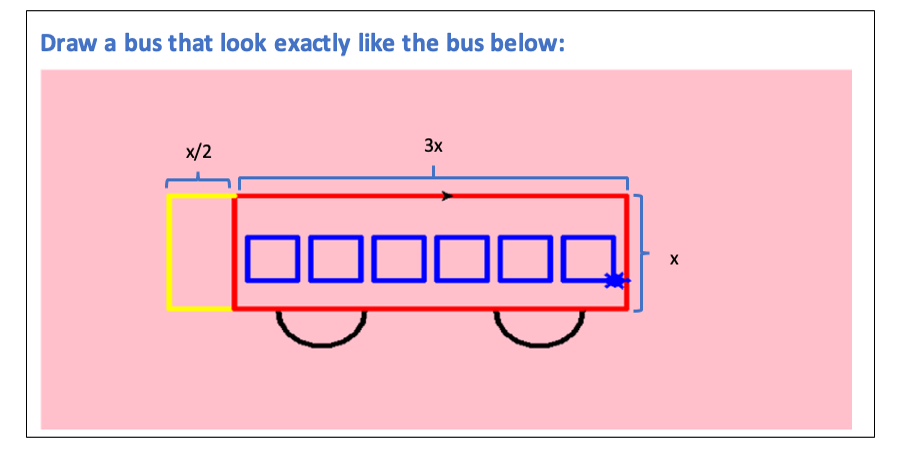

6. if-else conditional statement.
This level 5 will have 2 parts:
- Part 1: : You will learn about ‘if-else’ statement/condition in this first part. There will be a simple task in this part.
- Part 2: In this part you will have further practice for the for loop and while loop.
Let's take a look at how to use condition in the video
Reminder:: Through the first 3 level of the turtle program, students should have learnt the turtle’s default direction, some common commands to change direction of the turtle, the "for loop" and the "while loop". Here are what you have learnt so far:
| Purpose | Command |
|---|---|
| Import Python turtle graphic. | import turtle |
| Create a name for your turtle. | name = turtle.Turtle() |
| Choosing a shape.
if you skip the command choosing a shape for your turtle then your turtle shape will automatically be an arrow. |
name.shape(‘shape’)
You have to replace ‘shape’ by one of these shapes: arrow, circle, square, triangle or turtle. |
| Choosing a color
if you skip the command choosing a color for your turtle then your turtle color will automatically be black. |
name.color(‘color’)
You have to replace ‘color’ by the color that you wish to. |
| Setting a default location to (0,0) | name.goto(0,0) |
| Setting a
background
If you don’t want to have background image for your turtle, please skip this part. |
|
| Call the screen function. | screen=turtle.Screen(). |
| Set background to the picture that you like. | screen.bgpic(“picture_file”)
Click to the image icon and look at 3 images that it contains. Replace ‘picture_file’ with the image file that you like. |
| Movement commands | |
| Make the turtle go forward in the current direction. | turtle.forward(steps) |
| Turns the turtle to the left direction in number degrees. | turtle.left(degrees) |
| Turns the turtle to the right direction in number degrees. | turtle.right(degrees) |
| Pointing a variable to an object. | variable = object
The object can be in any type: integer, decimal, list, etc. |
| Setting turtle pen to a color | turtle. pencolor('color')
Replace ‘color’ by a color that you want. |
| The general while loop is: n = a while n < c: code chunk n = n + b |
The general for loop is: for i inrange(n): code chunk |
Part 1: “if-else” statement and exercise about ‘if-else’ statement.
- If the condition is true, then do the 1st indented statements. If the condition is not true, then it will be ‘else’ and the 2nd indented block will be processed.
- There are several types of comparison:
- There should not be any space between the two-symbol Python substitutes.
- Notice that the obvious choice for equals, a single equal sign, is not used to check for equality. An annoying second equal sign is required. This is because the single equal sign is already used for assignment of an object to a variable in Python, so it is not available for tests.
- INSTRUCTION:
- Step 1: Fill in the first blank.
- Hints: Each suitcase must not weigh more than 50 lbs. You should fill in the blank an integer, which represent the condition.
- Step 2: Fill in the second blank:
- Hints: This is a printing statement. This one should print out the message when the condition is satisfied (when the weight is over 50). You should fill in the blank only the message when the condition is not satisfied, which is 'Your suitcase is heavier than 50 lbs’.
- Step 3: Fill in the third blank:
- Hints: an ‘if -else’ statement has 2 parts: ‘if’ and ‘else’. You have already had the ‘if’ part, now, you just have to fill in the other part, which is ‘else’. Please just type in the word ‘else’.
- Step 4: Fill in the fourth blank:
- Hints: this is a printing command which prints out the message 'Your suitcase is perfect!'
Part 2:

- In this section you will again practice your skill in using either a 'while loop' or a 'for loop'. You will practice these techniques through drawing a bus. During the program, you will learn 2 more techniques that is making the turtle go backward and drawing a semicircle/circle. Here are what you will have to perform:
- 2 for loops: Draw the rectangle, draw the windows (the squares).
- Instructions:
- Set up the default position, name your turtle, set up a background (if you want to) for your turtle.
- Pen up your turtle.
- Backward your turtle for 150 by using the provided syntax.
- Pen down your turtle.
- Set pensize to 5.
- Pick a length for all of your edges by using the similar syntax when you did for the square in the previous chapter. Notice that all the edges in the following shapes: the triangle, the square and the pentagon are the same, so you just have to pick a length (should be larger 50) for all of them. The width of the rectangle will be calculated later based on this length.
- Write the first for loop to draw the red rectangle (the body of the bus).
- Before writing the for loop:
- Set up your turtle pen color to red.
- Now you can write the for loop:
- Hints: 'i' in the general 'for loop' is the total number of edges that are equal to each other in the shape. For example, you have learnt how to draw the square by using a 'for loop', in a square, you have 4 equal edges, therefore, your 'i' is equal to 4 and the 'for loop' is 'for n in range(4):'. Now look at the rectangle There are 2 pairs of edges that are equal to each other (2 widths and 2 heights), therefore, the total number of edged that are equal in each group is 2, so 'i' here must equal to 2 and in order to write out this for loop, please use THE SAME FORMAT OF THE GENERAL FOR LOOP AND REPLACE 'i' BY 2.
- The code chunk will contain 4 lines of code, each line will do a different mission:
- Draw the width of the rectangle by writing the command that makes the turtle go forward by the length you have chosen multiplies by 3.
- Turn your turtle to the right for 90 degrees.
- Draw the height of the rectangle by writing the command that makes the turtle go forward by the length you have chosen.
- Turn your turtle to the right for 90 degrees.
- Draw the yellow rectangle (the light of the bus). You don’t need a for loop for this part, please follow the steps below:
- Set up your turtle pen color to yellow.
- Make your turtle go backward by the chosen length /2.
- Make your turtle turn right for 90 degrees.
- Make your turtle go forward by the chosen length.
- Make your turtle turns left for 90 degrees.
- Make your turtle go forward by the chosen length /2.
- Now draw the 2 black tires.
- Calculate the radius first, radius = chosen length / pi. The Python math library has a built-in value of pi, math.pi, so you do not need to remember it.You can assign it like this: radius = your chosen length // math.pi
- Make your turtle go forward by the radius.
- Make your turtle turn right for 90 degrees.
- Set up your turtle pen color to black.
- Draw the first tire by using the provided function.
- fMake your turtle turn right for 90 degrees.
- Set up your turtle pen color to red.
- Make your turtle go forward by 3*((chosen length) – 6*(radius)).
- Make your turtle turn right for 90 degrees.
- Set up your turtle pen color to black.
- Draw the second tire by using the provided function.
- Make your turtle turn right for 90 degrees.
- Draw the windows:
- Before drawing out the windows, you will have to move your turtle to a suitable position. You can follow the steps below:
- Set up your turtle pen color to red.
- Make your turtle go backward by the (chosen length)*3-radius.
- Make your turtle turn left for 90 degrees.
- Make your turtle go forward by the chosen length // 4, this fraction means only take the integer part.
- Make your turtle turn right for 90 degrees.
- Now is the nested for loop to draw all the windows:
- There are 6 windows in the bus, so the code that draw 1 square window must be run for 6 times.
- The code that draw 6 windows have been made for you, you will need to fill in the banks and change ‘turtle’ into the name you have set up for your turtle.
- Here is the code:
for i in range(...):
my_turtle.penup()
my_turtle.forward(fw+width)
my_turtle.pendown()
for k in range(...):
my_turtle.left(90)
my_turtle.forward(x)
|
General "if-else" statement:
if (condition): "1" intended statement block else: "2" intended statement block |
| Meaning | Math Comparison Notations | Python Comparison Notations |
|---|---|---|
| Less than | < | < |
| Greater than | > | > |
| Less than or equal | ≤ | = |
| Greater than or equal | ≥ | >= |
| Equals | = | == |
| Not equal | ≠ | != |
Example: Each student has familiar with the grading scale. If their grades are higher or equal to 90, then they will get an A, if their grades are higher or equal to 80 and lower than 90, then they will get a B, etc. They can always read back the grading scale on their school website or ask their advisor/counselor anytime. Here is the ‘if-else’ statement for the example
| Example if-else condition. | Example situation and output. |
|---|---|
|
if grade >= 90:
print("Your current grade is: "+str(grade)) print("A") if grade >= 80 and grade < 90: print("Your current grade is: "+str(grade)) print("B") else: print("Please check back all the grade levels.") |
Example situation: if your current grade is 95 then find the letter grade Your current grade is: 95 A |
Exercise task: When travelling on a plane, you can only carry maximum of 2 suitcases and the maximum weight of each suitcase is 50lbs. Therefore, 2 suitcases will correspond to a maximum of 100lbs. Any suitcases that is heavier than 50lbs will not be allowed to carry on the plane. Please make a condition ‘if-else’ statement for this situation. If the suitcase weight is higher than 50 lbs, please print 'Your suitcase is heavier than 50 lbs’. Otherwise, please print 'Your suitcase is perfect!'. You will complete this task by filling in the blanks, the ‘if-else’ statement will be given below and there are 4 blanks in it:
The check button will check the correctness of your answers.
if weight > 50:
print("Your suitcase is heavier than 50 lbs")
else:
print("Your suitcase is perfect!")
if weight > ...:
...
else:
print("...")
| 2 new techniques: Going backward: turtle.backward(steps) Drawing semi circle: turtle.circle(radius, 180) |
pi = 3.14
x = 90
width = 3*x
r = x//pi
fw = x/10
width = x/3
my_turtle = turtle.Turtle()
my_turtle.penup()
my_turtle.goto(-100,0)
my_turtle.pendown()
my_turtle.pensize(5)
my_turtle.shape('turtle')
# draw the body
my_turtle.color('red')
for i in range(2):
my_turtle.forward(x*3)
my_turtle.right(90)
my_turtle.forward(x)
my_turtle.right(90)
# Draw the light
my_turtle.color('yellow')
my_turtle.backward(x/2)
my_turtle.right(90)
my_turtle.forward(x)
my_turtle.left(90)
my_turtle.forward(x/2)
Draw the black 2 tires
my_turtle.forward(r)
my_turtle.right(90)
my_turtle.color('black')
my_turtle.circle(r, 180)
my_turtle.right(90)
my_turtle.color("red")
my_turtle.forward(3*x - 6*r)
my_turtle.right(90)
my_turtle.color('black')
my_turtle.circle(r, 180)
my_turtle.right(90)
draw windows
my_turtle.color("red")
my_turtle.backward(3*x-r)
my_turtle.left(90)
my_turtle.forward(x//4)
my_turtle.right(90)
my_turtle.color("blue")
for i in range(6):
my_turtle.penup()
my_turtle.forward(fw+width)
my_turtle.pendown()
for i in range(4):
my_turtle.left(90)
my_turtle.forward(x)
from browser import document
import turtle
turtle.set_defaults(
turtle_canvas_wrapper = document['turtle-div1'])
# DO NOT DELETE ABOVE THIS LINE
######## Write your code below
name = turtle.Turtle()
name.shape("turtle")
name.color("red")
# DO NOT DELETE BELOW THIS LINE
turtle.done()
« Previous Next »